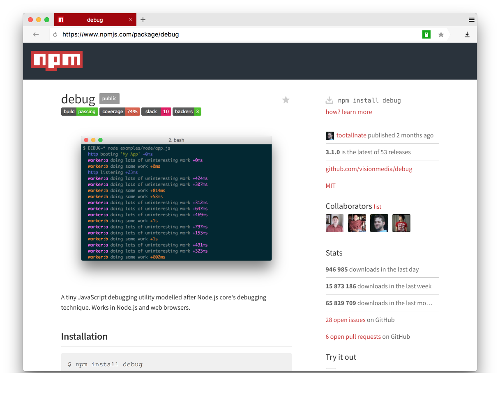
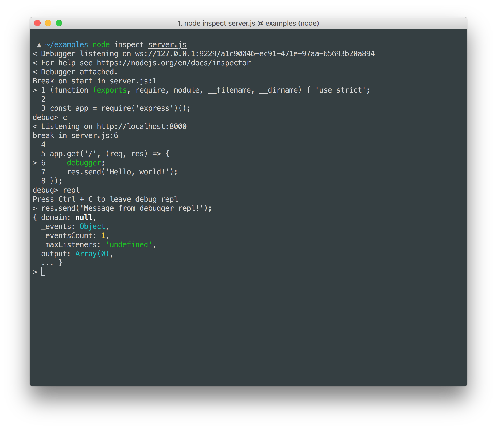
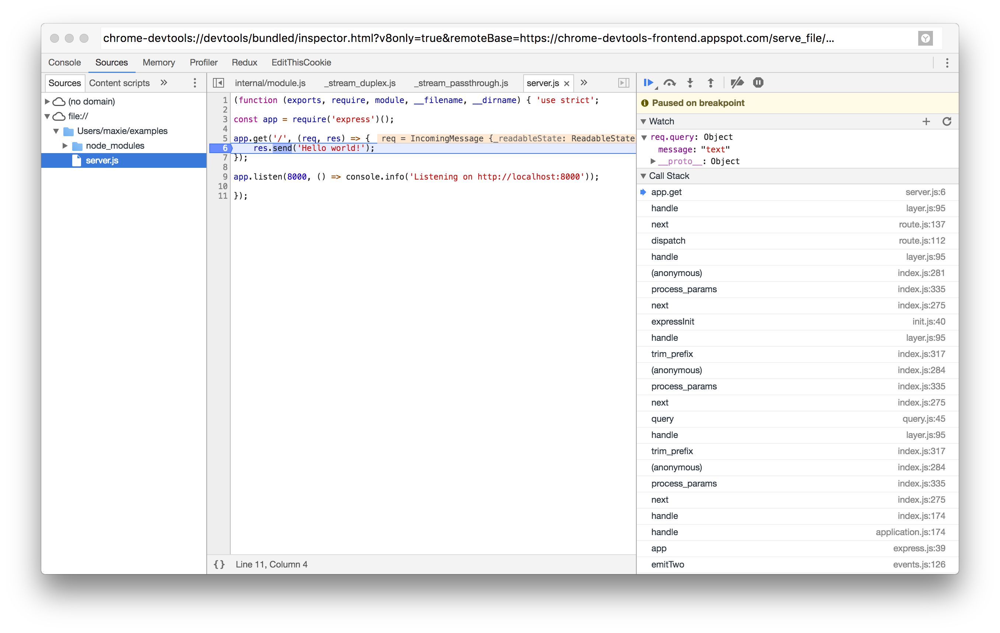
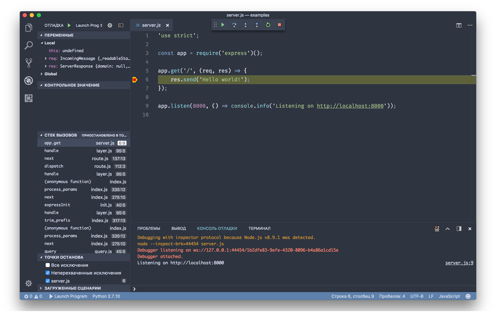
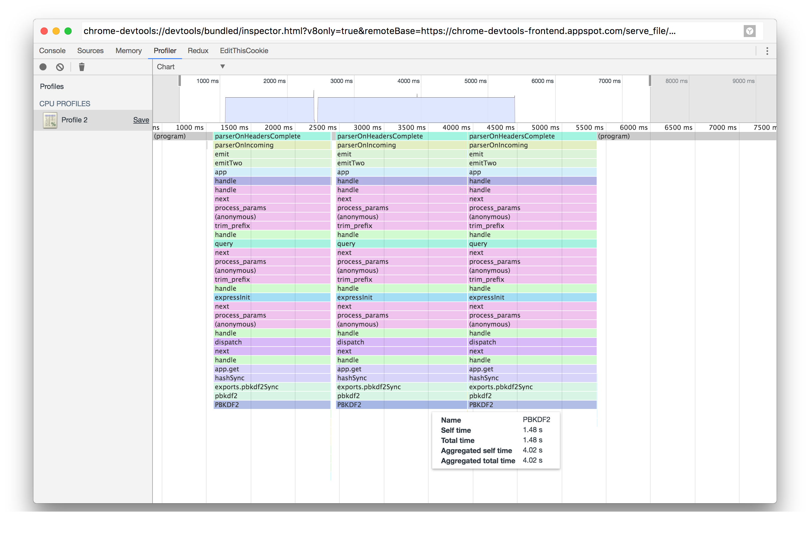

Node.js
Работа с файлами
Работа с файлами
const fs = require('fs');
fs.readFile(__filename, (error, content) => {
console.log(content);
});
__filename – строка, которая хранит абсолютный путь до текущего файла
Buffer 63 6f 6e 73 74 20 66 73 20 3d 20 72 65...Buffer
Класс для работы с бинарными данными
Буфер можно рассматривать как массив чисел, ограниченных диапазоном 0-255
Каждое число представляет байт
Buffer
const letterB = new Buffer([98]);letterB.toString(); // bletterB.toString('utf-8'); // bBuffer
const msg = new Buffer([0x2f, 0x04, 0x3d, 0x04,
0x34, 0x04, 0x35, 0x04, 0x3a, 0x04, 0x41, 0x04]);
msg.toString(); // По умолчанию: utf-8// \u0004=\u00044\u00045\u0004:\u0004A\u0004msg.toString('usc-2');// ЯндексРабота с файлами
fs.readFile(__filename, (error, buffer) => {
console.log(buffer.toString('utf-8'));
});
fs.readFile(__filename, 'utf-8', (error, content) => {
console.log(content);
});
Работа с файлами
fs.appendFile();fs.writeFile();fs.unlink();fs.mkdir();Работа с файлами
fs.readFileSync(__filename);fs.writeFileSync(__filename, data);fs.mkdirSync('/games/diablo3');Блокируют поток выполнения программы
const path = require('path');
// Windows
path.join('\a', 'b', '..', 'c'); // \a\c
// UNIX
path.join('/a', 'b', '..', 'c'); // /a/c
Работа с файлами
fs.readFile(__filename, (error, buffer) => {
console.log(buffer);
});
Данные предварительно сохраняются в Buffer
Только когда весь файл прочитан, данные передаются в обработчик


Потоки
Потоки
Данные готовы для обработки, как только будет прочитан первый chunk
✓ Экономия ресурсов
✓ Экономия времени
const fs = require('fs');
const zlib = require('zlib');
fs.readFile(__filename, (error, buffer) => {
zlib.gzip(buffer, (error, buffer) => {
fs.writeFile(__filename + '.gz', buffer, error => {
console.log('Success');
});
});
});
Экономия ресурсов
Buffer в V8 не может быть больше
0x3FFFFFFF bytes ~
1 Gb
File size is greater than possible Buffer: 0x3FFFFFFF bytes
const fs = require('fs');
const zlib = require('zlib');
fs
.createReadStream(__filename)
.pipe(zlib.createGzip())
.pipe(fs.createWriteStream(__filename + '.gz')
.on('finish', () => console.log('Success'))
.on('error', () => console.error('Error!');
stream instanceof EventEmitter === true
Виды потоков
Readable - для чтения
Writable - для записи
Duplex - для чтения и записи
Transform - Duplex, но с преобразованием
Примеры Readable потоков
fs.createReadStream(filename); // fs.ReadStream
require('http')
.request(options)
.on('response', res => { // http.IncomingMessage
res.on('data', chunk => {});
res.on('end', () => {});
});
События Readable потоков
data - при получении чанка данных
end - при завершении данных в потоке
close - при закрытии потока
error - в случае ошибки
Примеры Writable потоков
fs.createWriteStream(filename); // fs.WriteStream
server.on('request', (req, res) => { // http.ServerResponse
res.write('Hello, ');
res.write('World!');
res.end();
});
Методы Writable потоков
.write() - отправляет порцию данных в поток
.end() - завершает запись в поток
События Writable потоков
error - в случае ошибки передачи данных
Передача данных из одного потока в другой
$ cat index.js | grep "function" | wc -l
readable.on('data', chunk => {
writable.write(chunk);
});
readable.pipe(writable);
readable.pipe(transform).pipe(writable);
const fs = require('fs');
const zlib = require('zlib');
fs.readFile(__filename, (error, buffer) => {
zlib.gzip(buffer, (error, buffer) => {
fs.writeFile(__filename + '.gz', buffer, error => {
console.log('Success');
});
});
});
const fs = require('fs');
const zlib = require('zlib');
fs
.createReadStream(__filename)
.pipe(zlib.createGzip())
.pipe(fs.createWriteStream(__filename + '.gz')
.on('finish', () => console.log('Success'))
.on('error', () => console.error('Error!'));
Почитать про работу с файлами
File System
nodejs.org
Stream
nodejs.org
Node.js
Streams: Everything you need to know
Samer Buna
Node.js
Design Patterns
Mario Casciaro, Luciano Mammino
Отладка
console.log();
console.log();Консоль
console.log('Some info'); // Эквивалентно console.info
console.error('Some error'); // Эквивалентно console.warn
$ node index.js 1>stdout.log 2>stderr.log
$ cat stdout.log
Some info
$ cat stderr.log
Some error
Консоль
console.trace();
$ node index.js 2>stderr.log
$ cat stderr.log
Trace
at Object.<anonymous> (/Users/username/examples/console.js:9:9)
at Module._compile (module.js:624:30)
at Object.Module._extensions..js (module.js:635:10)
at Module.load (module.js:545:32)
at tryModuleLoad (module.js:508:12)
at Function.Module._load (module.js:500:3)
at Function.Module.runMain (module.js:665:10)
at startup (bootstrap_node.js:187:16)
at bootstrap_node.js:608:3
Консоль
console.time('long-operation');
executeSomeLongOperation();
console.timeEnd('long-operation');
// long-operation: 8589.798ms
require('debug');

require('debug');
require('debug');
require('debug');$ DEBUG=express* node server.js
require('debug');
require('debug');$ npm i debug --save
const debug = require('debug');
const app = require('express')();
const infoDebug = debug('info');
app.get('/', (req, res) => {
infoDebug('some info');
res.send('Hello, world!');
});
app.listen(8000);
require('debug');
require('debug');$ DEBUG=info node server.jsDebugger
Debugger
$ node inspect server.js
Debugger
help - Посмотреть полный список доступных командrepl - Открыть REPL в текущем контесте исполненияcont, c - Продолжить до точки остановаnext, n - Продолжить до следующей строкиstep, s - Продолжить с заходом в функцию out, o - Продолжить выйдя из текущей функцииDebugger
Чтобы указать в коде точку останова достаточно добавить в него ключевое слово debugger
const app = require('express')();
app.get('/', (req, res) => {
debugger;
res.send('Hello, world!');
});
app.listen(8000);
Debugger
Отладка в Chrome DevTools
Отладка в Chrome DevTools
$ node --inspect server.js
$ node --inspect-brk server.js
Debugger listening on ws://127.0.0.1:9229/21bd68bf-b326-49b2-b490-f551fdf08ed1
For help see https://nodejs.org/en/docs/inspector
Listening on http://localhost:8000
Отладка в Chrome DevTools
Для того чтобы открыть отладчик нужно:
1. Перейти на страницу about:inspect
2. В разделе Remote targets выбрать или добавить новую цель для отладки и нажать inspect
Отладка в Chrome DevTools
Отладка в VS Code
Отладка в VS Code
Для того чтобы открыть отладчик нужно:
1. Перейти на вкладку Отладка (Ctrl+Shift+D)
2. Создать или выбрать конфигурацию для отладки
3. Запустить отладчик нажав Начать отладку (F5)
Базовая конфигурация для отладки в VS Code
{
"version": "0.2.0",
"configurations": [
{
"type": "node",
"request": "launch",
"name": "Launch Program",
"program": "${workspaceFolder}/server.js"
}
]
}
Отладка в VS Code
Почитать про отладку
debug
npmjs.com
Debugger
nodejs.org
Debugging
Node.js with Chrome DevTools
Paul Irish
How
to Debug Node.js with the Best Tools Available
Gergely Nemeth
Профилирование
Профилирование - это сбор характеристик работы программы для дальнейшего анализа
«Преждевременная оптимизация — корень всех зол»
Дональд КнутСначала сделайте так, чтобы ваш код работал
И только потом, чтобы он работал быстро (если это нужно)
Инструменты
1. node --prof + node --prof-process2. v8-profiler3. 0x + cpuprofilify4. node-report5. Chrome DevTools + node --inspect...
const crypto = require('crypto');
const app = require('express')();
function hash(password) {
return crypto.pbkdf2Sync(
password, 'salt', 100000, 512, 'sha512'
).toString();
}
app.get('/', (req, res) => res.send(hash('p@ssw0rd')));
app.listen(8000);
Профилирование в Chrome DevTools
В режиме отладки в Chrome DevTools нужно перейти на вкладку profiler и нажать Start
После этого профилировщик начнет собирать информацию по ходу работы нашего кода
Чтобы закончить профилирование и перейти к просмотру результатов достаточно нажать Stop
Профилирование в Chrome DevTools
Результаты доступны в трех видах:
Tree (Top Down) - Стек вызовов
Heavy (Bottom Up) - Список всех вызванных функций, вместе с временем их выполнения
Chart - Графическое представление хода исполнения кода (Flame Chart)
Профилирование в Chrome DevTools
Почитать про профилирование
Easy profiling for Node.js
Applications
nodejs.org
Node.js
Post-Mortem Diagnostics & Debugging
Gergely Nemeth